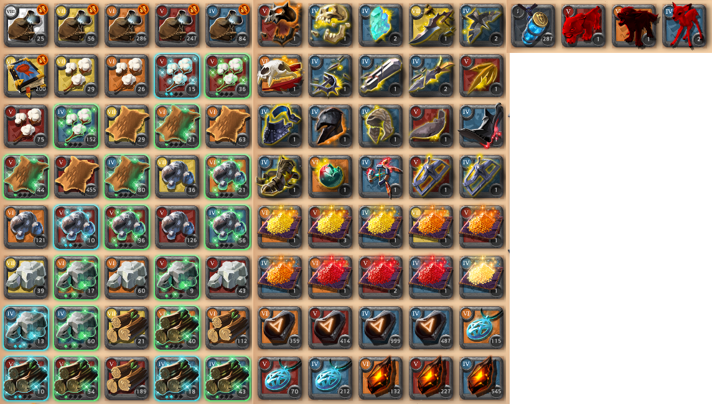

100抽T7征服者寶箱
T7征服者寶箱的內容物以及恩惠點數的兌換。
開箱結果
開箱時間: 2022/12/11 (版本v1.21)
直售收益(非估價)+錢袋: 35,896,582銀幣
聲望書: 20,000,000聲望
恩惠點數的兌換選項
| 兌換選項 | 所需恩惠點數 | 收益 | 每恩惠點收益 |
| T8洞察之書 | 2,000 | 200,000聲望 | 100聲望 |
| T7征服者寶箱 | 5,500 | 358,965銀幣+200,000聲望 (100抽開箱平均) | 65.26銀幣+36.36聲望 |
| 虹吸能量(均價逃稅賣出) | 150 | 8,533銀幣 | 56.88銀幣 |
| 虹吸能量(白城4%稅直售) | 150 | 7,680銀幣 | 51.2銀幣 |
結論：如果你缺聲望就換書，如果缺錢的話就換寶箱，兩個選項都不怎麼虧。
編輯紀錄
作者: runnywolf
最後編輯日期: 2022/12/12